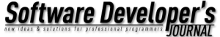

PyCon APAC 2013 in Japan
9月13日〜16日
工学院大学
新宿キャンパス
About
Participants
Program
Venue
Sponsors
Reports
Blog
English
| 日本語 |
中文
Blogs
¶
メディア記事
¶
言語カンファレンスに初めて参加する際のトリセツ～Dropbox開発者も来日『PyCon APAC 2013』運営陣に聞く - エンジニアtype
『Dropbox』入社3番目のプログラマーが語る「僕らがすべてをPythonで開発してきた理由」～PyCon APAC 2013 - エンジニアtype
Dropboxは全部Pythonで信頼性の高いソフトウェアを作った（前編）～PyCon APAC 2013 － Publickey
Dropboxは全部Pythonで信頼性の高いソフトウェアを作った（後編）～PyCon APAC 2013 － Publickey
東京でPyCon APACが開催——悪天候にもかかわらず、多数のPythonistaが来場
第1回 高エネルギー研究，Dropboxを支えるPythonの力 ─Georg Brandl氏, Rian Hunter氏による基調講演から：PyCon APAC 2013参加レポート｜gihyo.jp … 技術評論社
第2回 Pythonによる開発運用を助けるツールたち ─パッケージシステム，DataDogでモニタリング，mockを使ったテスト：PyCon APAC 2013参加レポート｜gihyo.jp … 技術評論社
第3回 Pythonを便利に使うフレームワーク，ライブラリ ～PyConの楽しみ方：PyCon APAC 2013参加レポート｜gihyo.jp … 技術評論社
運営レポート
¶
PyCon APAC 2013 in Japanレポート ～第1回 基調講演とプログラムについて：CodeZine
PyCon APAC 2013 in Japanレポート ～第2回 プログラム以外の要素：CodeZine
参加者によるブログエントリ
¶
おいぬま日報: PyCon APAC 2013 1日目に行ってきた(1) #pyconapac
おいぬま日報: PyCon APAC 2013 1日目に行ってきた(2) #pyconapac
おいぬま日報: PyCon APAC 2013 1日目に行ってきた(3) #pyconapac
おいぬま日報: PyCon APAC 2013 2日目に行ってきた(1) #pyconapac
おいぬま日報: PyCon APAC 2013 2日目に行ってきた(2) #pyconapac
PyConAPAC 2013 に行ってきた - 混沌脳内
PyCon APAC 2013 に行ってきました: Addicted To Indentation
PyCon APAC 2013 のメモ | tsuyuki.makoto
PyCON APAC 2013に参加しました - 偏った言語信者の垂れ流し
PyCon APAC 2013で発表してきた
PyCon APAC 2013に行ってきました - ウラガミ・ライフ
PyCon APAC 2013 にスピーカーとして参加してきました - プログラマ行進曲第二章
PyCon APAC 2013 1日目 - てきとうなメモ
PyCon APAC 2013 2日目 - てきとうなメモ
PyCon APAC 2013 に行ってきましたメモ - 牌語備忘録 - pygo
PyCon APAC 2013 に参加した - ももいろテクノロジー
PyCon APAC 2013に行ってきた(１日目) - taka512’s blog
PyCon APAC 2013に行ってきた(２日目) - taka512’s blog
PyCon APAC 1Day に行ってきました。 - Python １年生
PyCon APAC 2013 カンファレンスデイ1 感想 ＆ メモ - としたにあんの左脳
PyCon 2013行ってきた 9/14 - 忘れないようにメモっとく
PyCon APAC 2013 in Japan に参加しました | hexacosa.net
PyCON APAC 2013 雑感：ある nakagami の日記：So-netブログ
PyCon APAC 2013 一日目に参加してきました | まったりとlog残し
PyCon APAC 2013 | 生化学シミュレーション研究チーム
PyCon APAC 2013で発表した結果
Pycon APAC 2013の感想メモ - arveltの技術メモ
PyCon APAC 2013 in JAPANに行ってきました | しょーとさーきっと。
PyCon APAC 2013に参加してきた | ryo1のつぶやき
スタッフによるブログエントリ
¶
WLX302 PyCon APAC 2013への機材提供 #pyconapac #pyconjp | ヤマハの音とネットワーク製品を語る
ryu22eBlog:PyCon APAC 2013 in Japan にスタッフとして参加しました #pyconapac #pyconjp
PyCon APAC 2013 終わりました - ま、そんな日もあるさ
PyCon APAC 2013 に参加しました #pyconapac #pyconjp — kashew_nuts-blog
もふブロ : 今年の PyCon は APAC でした。
PyCon APAC 2013 が無事終わったようです #pyconapac #pyconjp — プログラマのネタ帳 二冊目
PyCon APAC 2013 - Ian Lewis
/var/log/hktechno: PyCon APAC 2013 に参加した
PyCon APAC 2013 で当日スタッフをしていました — doing mistakes
#yapcasia と #pyconapac 2013のボランティア参加してきた - kfly8の日記
PyCon APAC 2013のお手伝いに行ってきました！ : ゼロスタートの広報ブログ
Event Report: PyCon APAC 2013 | Sweet Remedy
スポンサーによるブログエントリ
¶
[PyCon APAC 2013 in Japan] 無事開催できました - MAMO Press
PyCon APAC 2013!!!!: 素直に思ったまま!
Platinum スポンサー
Gold スポンサー
Silver スポンサー
PyCon APAC Patron
メディアスポンサー

サポート
共催